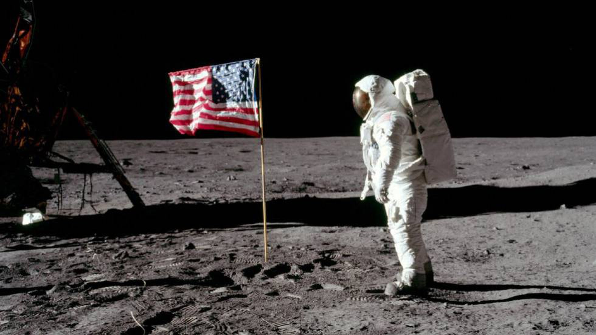

|
<
|
 |
Revive el sueño humano , viaja a la luna un lugar que todos hemos observado y ahora podemos visitar.
La Luna es el único cuerpo celeste en el que el ser humano ha realizado un descenso tripulado. Aunque el programa Luna de la Unión Soviética fue el primero en alcanzar la Luna con una nave espacial no tripulada, el programa Apolo de Estados Unidos realizó las únicas misiones tripuladas al satélite terrestre hasta la fecha, comenzando con la primera órbita lunar tripulada por el Apolo 8 en 1968, y seis alunizajes tripulados entre 1969 y 1972, siendo el primero el Apolo 11 en 1969, y el último el Apolo 17.